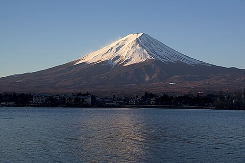
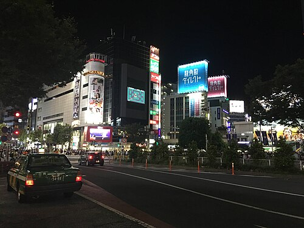
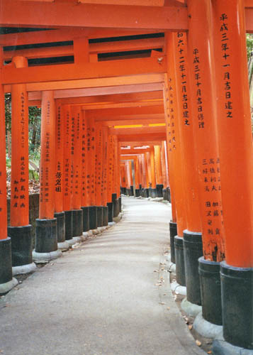
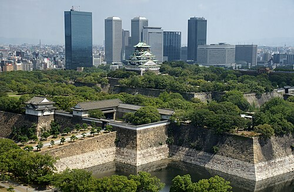
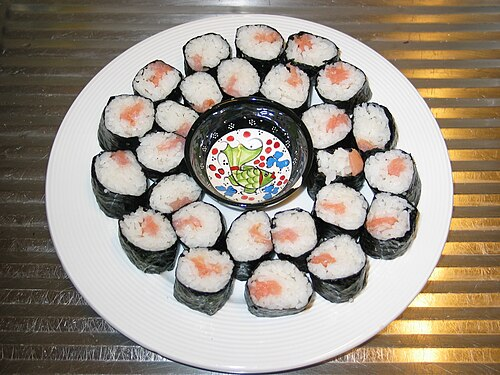
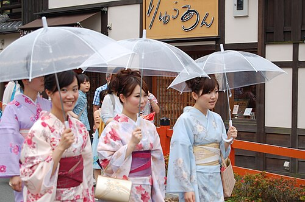
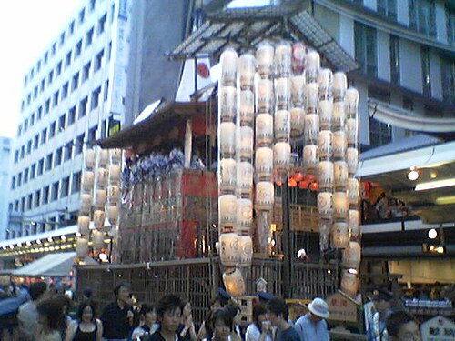

A terra do sol nascente
O Japão é um país insular localizado no leste da Ásia, formado por milhares de ilhas. Sua capital é Tóquio, uma das cidades mais populosas e modernas do mundo. O idioma oficial é o japonês e o país é conhecido por misturar tradições muito antigas com tecnologia de ponta. O Japão tem cerca de 125 milhões de habitantes.

É a montanha mais alta do Japão e um símbolo do país. Muitas pessoas fazem trilhas até o topo, principalmente no verão.

Capital do Japão, é uma cidade enorme e cheia de luzes, com bairros famosos como Shibuya e Akihabara.

Antiga capital do Japão, famosa por seus templos, jardins e pelo bairro tradicional de Gion, onde é possível ver gueixas.

Conhecida como a capital da comida japonesa, além de possuir o famoso Castelo de Osaka.
A cultura japonesa é muito rica e valoriza o respeito, a disciplina e as tradições. Entre os pontos mais conhecidos estão os festivais (matsuri), o uso do quimono em ocasiões especiais e a culinária, com pratos famosos como sushi, ramen e tempurá. O Japão também é o berço de coisas populares no mundo todo, como o anime e o mangá.

Um dos pratos mais famosos do Japão, feito com arroz temperado e peixe fresco.

Traje tradicional japonês, usado em ocasiões especiais como festivais e casamentos.

Os festivais japoneses reúnem comidas, danças, fogos de artifício e muita tradição.